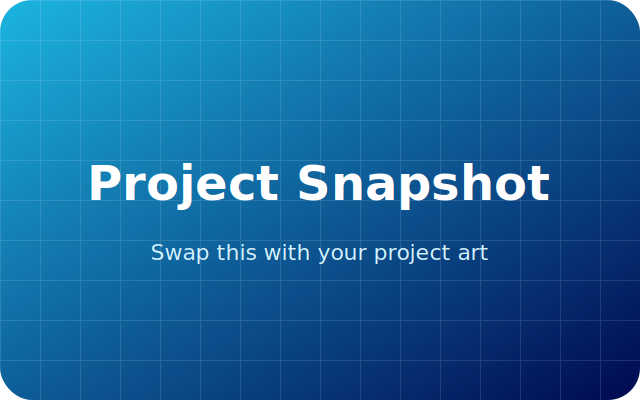

Sobre mim
Use esta seção para apresentar um resumo da sua trajetória, especialidades e objetivos. Enquanto isso, a imagem ao lado serve apenas como lembrete visual e pode ser substituída por uma foto profissional.
Projetos em destaque
Troque este arquivo vetorial por um print do seu projeto ou uma composição que represente o trabalho. Como o formato é SVG, você pode exportar de ferramentas vetoriais ou simplesmente substituir a referência pelo seu próprio arquivo.